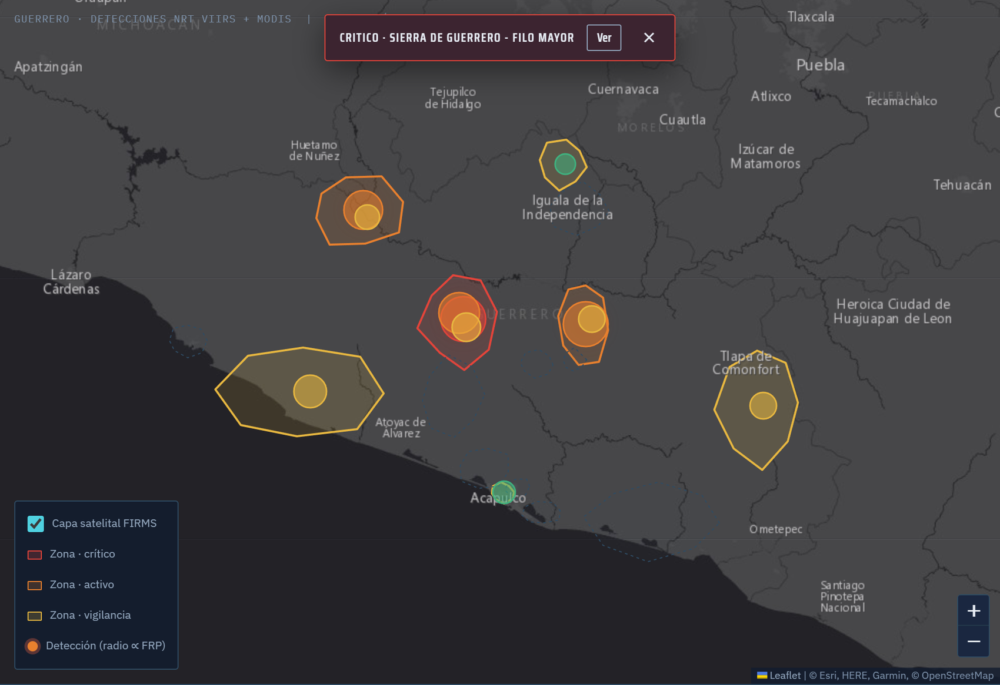
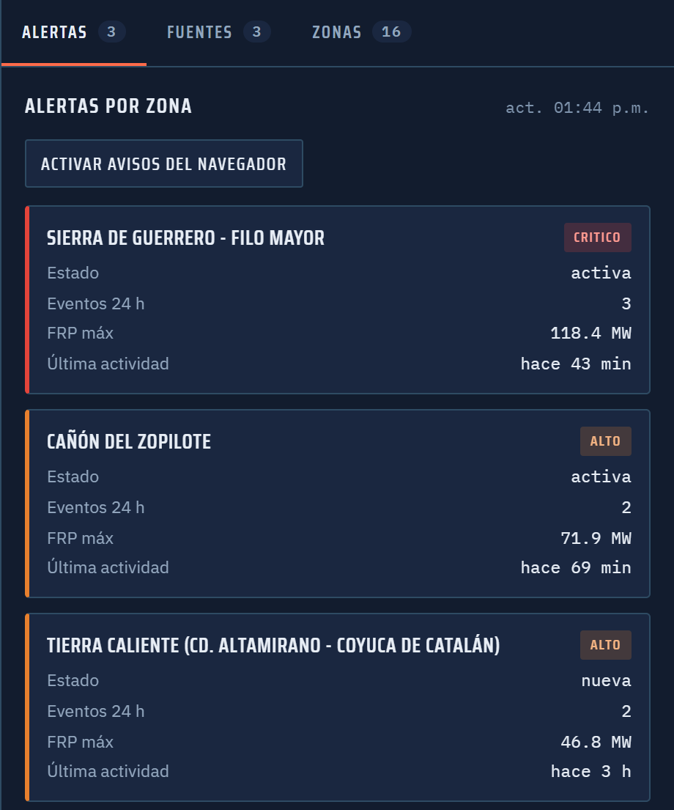
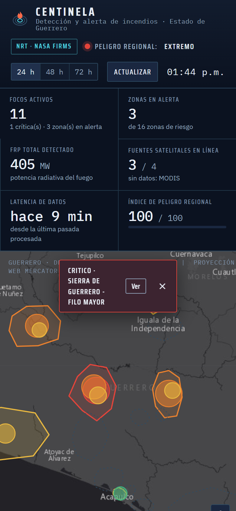

Demo visual · eventos sintéticos
CENTINELA
Una muestra de la consola interna para leer el mapa, revisar alertas y entender la fuente de cada detección.
Monitoreo regional
Última actualización · demoResumen de zonas
NorteCrítica
CentroVigilancia
SurControlada
Ciclo de vida
Alertas recientes
| Zona | Severidad | Estado | Edad |
|---|---|---|---|
| Norte | 87 / 100 | Activa | 18 min |
| Centro | 42 / 100 | Vigilancia | 41 min |
| Sur | 21 / 100 | Controlada | 6 h |
Ingesta simulada
Fuentes satelitales
VIIRS18
detecciones
MODIS07
detecciones
Latencia3 h
referencia típica
Trazabilidad
Eventos de operación
Ingesta completadahace 8 min
Alerta alta notificadahace 18 min
Zona actualizadahace 41 min


